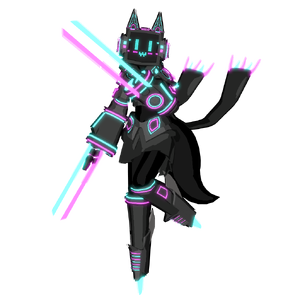

Neo Pilot
背景

她见证了数百年间最亲近的朋友和战友死亡、毁容，而 Temperance Colony 遭受恐怖规模毁灭的景象仍鲜明地留在脑海中。Neo 的 Pilot 选择让自己沉入毫无意义的消费与放纵之中，把 Neo Colony 变成一个充满无尽暴食、派对和堕落的地方，用来隔离自己，并与 FOX Empire 的挣扎和苦难切断联系。她用外向、活泼的人格作为盾牌和应对机制，抵抗她在其中承担重要角色的帝国不断恶化的状态。即便帝国在 Opton War 中迅速遭到灭绝，她也已经破碎而绝望到无法站起来为族人而战。每一场新悲剧都只让她更深地自我隔离。Onyx 的 Pilot 死后，她被正式称为 FOX Empire 最强的 Combat Pilot。当 Neo Colony 被自动机攻击时，她终于被迫承受一次沉重的清醒打击。失去舒适和庇护之地后，Neo Pilot 开始沉入自己为自己打开的绝望深渊。
然而，当她的帝国逼近彻底灭绝的威胁时，她被迫意识到自己的目的。尽管 FOX Empire 的机会彻底无望，尽管不可避免的失败正迅速逼近，FOX 从未想过放弃，并完全准备好挣扎到最后一刻。久已失落的人类遗产仍完整地活在 FOX 的精神之中。这不是一群无思想自动机有权熄灭的东西。
作为少数已知拥有机会压倒 Commander Bravera 的存在之一，她知道为了让事情回归正轨，自己必须做什么。
策略
Neo Pilot 战斗由 2 个子阶段组成。如果玩家在对抗 Neo Pilot 时升空，她会跃向他们并尝试踢击两次。这些踢击有概率施加 Heavy 状态效果。
常规状态下，Neo Pilot 会使用斩击和横移。HP 达到 70% 后，她会开始从远距离跳向玩家。
每场战斗一次，当 HP 达到 40% 时，Neo Pilot 会进入第 2 子阶段。她会治疗大量 HP，并让所有跳跃附带电击冲击波，玩家必须跳过以躲避。她的近战攻击也会获得显著速度提升。再次达到 40% HP 后，Neo Pilot 会解锁两个强力新招式。第一个是朝前方释放、几乎瞬间发动的 tankbuster，要求玩家保持距离。第二个是快速打击的三连 pizza-cutter。
统计
基础 HP：27000
伤害：物理和电击
| 属性 | 抗性 |
|---|---|
| 物理 | 中性 (1x) |
| 火焰 | 弱点 (1.25x) |
| 冰霜 | 中性 (1x) |
| 电击 | 抗性 (0.75x) |
| 光耀 | 抗性 (0.75x) |
| 暗影 | 弱点 (1.25x) |
| 毒 | 中性 (1x) |